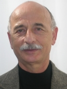

Oradores Invitados
David Garlan
David Garlan is a Professor of Computer Science and Director of Software Engineering Professional Programs in the School of Computer Science at Carnegie Mellon University. He received his Ph.D. from Carnegie Mellon in 1987. His interests include software architecture, self-adaptive systems, formal methods, and cyber-physical systems.
He is considered to be one of the founders of the field of software architecture, and, in particular, formal representation and analysis of architectural designs. He has published numerous articles and co-authored two books about software architecture. In 2005 he received a Stevens Award Citation for "fundamental contributions to the development and understanding of software architecture as a discipline in software engineering".
Web Site: https://www.cs.cmu.edu/~garlan/
Presentaciones
- An Architectural Approach to Cyber-Physical Systems
- Improving Software Quality Through Software Architecture - ASSE
Nora Sabelli
Senior Science Advisor. Center for Technology in Learning, SRI International.
Nora H. Sabelli has a Ph.D. in Chemistry (Theoretical Organic) from the University of Buenos Aires, Argentina for research performed at the University of Chicago. Prior to joining SRI International in 2001, Dr. Sabelli was Senior Program Director for the National Science Foundation's (NSF) Directorate for Education and Human Resources, and worked on many NSF-wide and cross-agency initiatives related to education, technology and science, such as Learning and Intelligent Systems and Interagency
Education Research Initiatives.
At the NSF, she focused on the support of research on the use of current scientific advances and technological opportunities to help provide quality science and mathematics education for all students. While at the NSF, Dr. Sabelli worked on education issues at the Office of Science and Technology Policy (OSTP), which serves as a source of scientific and technological analysis and judgment for the President with respect to major policies, plans, and programs of the Federal Government.
In addition to her directorship at the NSF, Dr. Sabelli's former positions include senior research scientist and assistant director for education at the National Center for Supercomputing Applications at the University of Illinois at Urbana-Champaign, and associate professor of chemistry at the University of Illinois at Chicago. She has authored many research publications in her field and has co-directed research theses.
Web site: https://ctl.sri.com/people/displayPerson.jsp?Nick=nora
Material utilizado durante su presentación.
Álvaro Ruiz de Mendarozqueta
Gerente del Centro de Software. Argentina Software Center. Motorola Solutions Software Operations. Motorola Argentina.
Álvaro Ruiz de Mendarozqueta es Site Manager del centro de desarrollo de software de Motorola Argentina. En este rol es responsable de la gestión del centro. A estas responsabilidades se suma la coordinación de la relación de Motorola con universidades y empresas del sector.
La trayectoria de Álvaro en Motorola comenzó en julio de 2001 como Gerente de Calidad y Procesos, en el 2006 fue designado como Gerente Senior de Operaciones y desde julio de 2008 se desempeña en su cargo actual. En el pasado, el ejecutivo se había desempeñado como Gerente de Calidad y más tarde como Gerente de Ingeniería de Software en Banco Río; asimismo fue consultor independiente en diversos proyectos y también ejerció la docencia en instituciones como CAECE, UBP, UP y UTN.
Álvaro es Ingeniero Mecánico por la Universidad Nacional de Rosario, y luego obtuvo los títulos de Especialista en Ingeniería Ferroviaria (Universidad de Buenos Aires) y Especialista en Ingeniería de Software (Universidad CAECE). Es actualmente Senior Member de la ASQ y además recibió las certificaciones ASQ – Manager of Quality/Organizational Excellence, Motorola Six Sigma Green Belt y SBMI (Software Business Management Institute) de Motorola University.
En 2008 fue ganador del premio Sadosky en la categoría Calidad Profesional.
A su vez se desempeña como Profesor Adjunto, UTN Córdoba y Director de la Maestría en Ingeniería de Sistemas, UTN Córdoba, y como Vicepresidente de AmCham delegación Córdoba.
Diego Martin Rubio
Director ejecutivo del Centro de Software. Argentina Software Center. Broadband Home Gateways and Software.
Motorola Mobility of Argentina.
Diego Rubio es Site Manager del centro de desarrollo de software de Motorola Mobility en Argentina. A este rol, se suman sus responsabilidades de Gerente de operaciones para la Unidad de Negocios Broadband Home Gateways and Software a nivel global. Se desempeña como responsable del desarrollo, mantenimiento y gestión de calidad de los Procesos de Desarrollo de Software y de las herramientas que lo implementan como así también del control de la documentación y capacitación de clientes finales. A estas responsabilidades se suma la coordinación de la relación de Motorola con universidades y empresas del sector.
La trayectoria de Diego en Motorola comenzó en Octubre de 2003 como Especialista en Calidad, Procesos y métricas. En el pasado, el ejecutivo se había desempeñado como Gerente de Proyectos y Líder técnico de proyectos de desarrollo de software; asimismo trabaja en la Universidad en el área de investigación y desarrollo en calidad de software y ejerce la docencia en instituciones como UBP y UTN.
Diego es Ingeniero en Sistemas de Información egresado de la Universidad Tecnológica Nacional de Córdoba, y luego obtuvo el título de Magíster en Ingeniería de Software (Universidad Nacional de La Plata). Es actualmente Senior Member de la ASQ y además recibió las certificaciones de Six Sigma Black Belt (ASQ CSSBB), Certified Software Quality Engineer (ASQ CSQE), Six Sigma Black Belt (Motorola) y Lean Six Sigma Green Belt Instructor (Motorola University).
El ejecutivo nació en Córdoba el 29 de Diciembre de 1978, está casado y tiene dos hijos. En su tiempo libre disfruta de su pasión por el fútbol, cocinar y, eventualmente, otros deportes como tenis y golf.
Marcelo Acrogliano
Marcelo Acrogliano (https://ar.linkedin.com/in/macrogliano) se desempeña en la actualidad en IBM, como Consultor Especialista
en el Valor de Negocios de las Soluciones Colaborativas de Lotus Software y es el líder de la iniciativa Collaboration Agenda en Latinoamérica de habla hispana (SSA). Previamente tuvo a su cargo las ventas de WebSphere Portal y Mashups y el desarrollo del negocio Lotus para toda la red de Canales de Lotus SSA. Ha profundizado su conocimiento en el uso de redes sociales en el ambiente empresario.
Con más de 18 años de experiencia en el mercado IT, se ha desempeñado en diversas posiciones regionales para el apoyo del Negocio de IBM Software en Tivoli y Lotus. En los últimos años se especializó en las herramientas que favorecen la productividad de las personas en el entorno empresarial.
Marcelo es Analista en Informática de la Universidad Argentina de la Empresa (UADE), con estudios de especialización en Marketing (Chartered Institute of Marketing, UK). En los últimos años participó como docente invitado en materias de grado y post-grado de la Universidad Torcuato Di Tella.
Se destaca como orador presentando los beneficios de negocios al incorporar soluciones de integración personalizadas, en eventos de la industria, prensa, clientes y asociados de negocios.
Pedro Larrañaga
Technical University of Madrid, Spain. 
Dr. Pedro Larrañaga received his diploma (Mathematics) degree in 1981 from University of Valladolid, Spain, and a PhD in Computer Science in 1995 from University of the Basque Country, Spain, where he obtained an associate professor level in 1998 and a full professor level in 2004. In 2007 he joined the Technical University of Madrid as full professor at the Department of Artificial Intelligence where he leads the Computational Intelligence group.
His research interests are in the fields of probabilistic graphical models and heuristic optimization. In both fields he has proposed methodological advances and successful applications in industry, computer science and biomedicine.
He has coauthored two edited books on estimation of distribution algorithms, as well as more than 300 scientific papers in different areas. He has participated in more than 70 research projects at national, European and international levels. Since 2007 he is the expert manager of computer technology area of the Spanish Ministry of Science and Innovation.
Presentaciones
Cristina Conati
University of British Columbia, Canada

Cristina Conati is an Associate Professor of Computer Science at the University of British Columbia. She received her M.Sc. degree in Computer Science from the University of Milan, Italy (1988), and an M.Sc. (1996) and Ph.D. (1999) in Artificial Intelligence from the University of Pittsburgh. Dr. Conati's areas of interest include Adaptive Interfaces, Intelligent Tutoring Systems, UserModeling, and Affective Computing. She published over 50 strictly refereed articles, and received best paper awards from the international conferences on User Modeling, AI in Education, Intelligent User Interfaces, and the Journal of User Modeling and User-Adapted Interaction.
Shannon Poulin (Intel)
Shannon Poulin is the Xeon Platform Director responsible for Intel’s Xeon Data Center Group Marketing team. He and his team are responsible for delivering industry leading Xeon processors, chipsets and platform components. They work closely with OEMs, ISVs and other partners to maximize the adoption of Xeon based servers. Previously Shannon has held Director and Manager roles at Intel covering performance benchmarking, competitive analysis, product launches, press engagement and strategic planning. Shannon has spent over ten years at Intel, most of that time in a Server or Enterprise capacity. Prior to joining Intel Shannon spent five years working for a microprocessor, memory and RF/ID silicon manufacturing company in a combination of sales and technical marketing positions. He also spent two years early in his career performing embedded system design for a military contractor. Shannon has a Bachelor's Degree in Electrical Engineering (BSEE) and a Master's Degree in Business Administration (MBA).
Presentaciones
David Barkai (Intel) HPC Symposium
Dr. David Barkai is an HPC computational architect for Intel Corporation, involved in interfacing between the HPC users' community and Intel. He also held a number of positions within Intel research labs involving peer-to-peer and investigations of the impact of emerging technologies on society. Before joining Intel in 1996, David worked for over 20 years in the field of scientific and engineering supercomputing for Control Data Corporation, Floating Point Systems, Cray Research Inc., Supercomputer Systems Inc., and NASA Ames Research Center.
David received his B.Sc. in physics and mathematics from the Hebrew University in Jerusalem and a Ph.D. in theoretical physics from Imperial College of Science and technology, London University, in the UK. Over the years David has published in various forums on subjects in physics, numerical methods, and computer applications and architectures. He authored the book "Peer-to-Peer Computing: Technologies for Sharing and Collaborating on the Net" (Intel Press, 2001) and other articles on related topics.
Presentaciones
Dan Hirsch
Dan Hirsch joined Intel's Argentina Software Development Center (ASDC) in September of 2006 after returning to Argentina. This Center is part of the Software and Solutions Group (SSG). Dan's current position is Sr. Software Engineer and he is the Technical Leader for the Argentina Cluster Engineering Team at ASDC, working in High Performance Computing and Distributed Systems. Also Dan has worked in multiple other actions related to ASDC projects and overall center organization. Dan has a PhD in Computer Science from Universidad de Buenos Aires. Prior to coming to Intel, Dan spent four years working as Researcher at the University of Pisa and at the Imperial College of London, both in the context of two European Union Research projects on Global Computing. Before going abroad, Dan was Assistant Professor and Researcher at the Computer Science Department of the University of Buenos Aires for more than 10 years in the area of Software Engineering, Software Architectures and Formal Methods. Also, Dan worked for two years as software engineering consultant for several Software Engineering consulting companies in Buenos Aires, and for seven years as Systems Chief Administrator for an important Argentina TV Group.
Presentaciones
- El desafío de transformarse de proveedores a líderes del conocimiento. La experiencia de Intel ASDC.
German Guido Lavalle

Doctor en Ingeniería e Ingeniero Nuclear, Instituto Balseiro, UN de Cuyo. CEO y fundador de CANDOIT, empresa de consultoría especializada en la optimización de la gestión de operaciones, logística, proyectos y riesgos. Anteriormente fue Rector de la Universidad Argentina de la Empresa (UADE), Decano de la Facultad de Ingeniería de UADE, Gerente de Relaciones Internacionales de la Comisión Nacional de Energía Atómica y profesor e investigador del Instituto Balseiro.
Profesor Titular en posgrados y capacitación ejecutiva en las Universidades de San Andrés, ESEADE, Austral y Federico Santa María (Chile). Ganador del Premio ARLOG 2008 de Logística Empresaria, y de los Premios a las Iniciativas Universitarias de Vinculación Tecnológica (Ministerio de Educación) y “Ernesto Galloni” (Academia Nacional de Ciencias Exactas, Físicas y Naturales).
Presentaciones
| Adjunto | Tamaño |
|---|---|
| Presentación plenaria de Nora Sabelli | 4.19 MB |